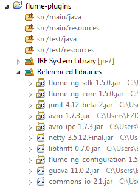

1 Background
Flume is an open-source Apache project, it is a distributed, reliable, and available service for efficiently collecting, aggregating, and moving large amounts of log data. This article shows how to import XML Files with Flume, including the development of a deserializer plugin and the corresponding configurations of Flume. We are using Flume 1.5.0 integrated with MapR.
The secenario is that XML files are sychronized to a directory periodically, we need to config a Spooling Directory Source to load these XML files into Flume.
2 Implement a Flume Deserializer
The default deserializer of Flume’s Spooling Directory Source is LineDeserializer, which simply parses each line as an Flume event. In our case, we need to implement a deserializer for XML files based on the structure.
2.1 Programming Environment
I prefer Gradle as the build automation and Eclispe as the IDE for java programming. Make sure you have them installed.
1. Create a folder for the project and create a build.gradle file using the template below.
2. Add dependencies to the build.gradle.
1 2 3 4 5 6 7 8 | @@ -25,6 +25,8 @@ repositories { dependencies { //compile 'commons-collections:commons-collections:3.2' + compile 'org.apache.flume:flume-ng-sdk:1.5.0' + compile 'org.apache.flume:flume-ng-core:1.5.0' testCompile 'junit:junit:4.+' } |
3. Initialize source folders and the Eclipse project.
1 | $ gradle initSourceFolders eclipse |
4. Import the project to Eclipse and now you can start coding.

2.2 Development
Custom deserializer has to implement EventDeserializer interface. We need to read input stream from ResettableInputStream and output a list of Event through readEvents() function.
1 2 3 4 5 6 7 8 9 10 11 12 13 14 15 16 17 18 19 20 21 22 23 24 25 26 27 28 29 30 31 32 33 34 35 36 37 38 39 40 41 42 43 44 45 46 47 48 49 50 51 52 53 54 55 56 57 58 59 60 61 62 63 64 65 66 | /** * Establishes a contract for reading events stored in arbitrary formats from * reliable, resettable streams. */ @InterfaceAudience.Public @InterfaceStability.Evolving public interface EventDeserializer extends Resettable, Closeable { /** * Read a single event from the underlying stream. * @return Deserialized event or {@code null} if no events could be read. * @throws IOException * @see #mark() * @see #reset() */ public Event readEvent() throws IOException; /** * Read a batch of events from the underlying stream. * @param numEvents Maximum number of events to return. * @return List of read events, or empty list if no events could be read. * @throws IOException * @see #mark() * @see #reset() */ public List<Event> readEvents(int numEvents) throws IOException; /** * Marks the underlying input stream, indicating that the events previously * returned by this EventDeserializer have been successfully committed. * @throws IOException * @see #reset() */ @Override public void mark() throws IOException; /** * Resets the underlying input stream to the last known mark (or beginning * of the stream if {@link #mark()} was never previously called. This should * be done in the case of inability to commit previously-deserialized events. * @throws IOException * @see #mark() */ @Override public void reset() throws IOException; /** * Calls {@link #reset()} on the stream and then closes it. * In the case of successful completion of event consumption, * {@link #mark()} MUST be called before {@code close()}. * @throws IOException * @see #mark() * @see #reset() */ @Override public void close() throws IOException; /** * Knows how to construct this deserializer.<br/> * <b>Note: Implementations MUST provide a public a no-arg constructor.</b> */ public interface Builder { public EventDeserializer build(Context context, ResettableInputStream in); } } |
2.3 Build and Deployment
Please view full article in Here!